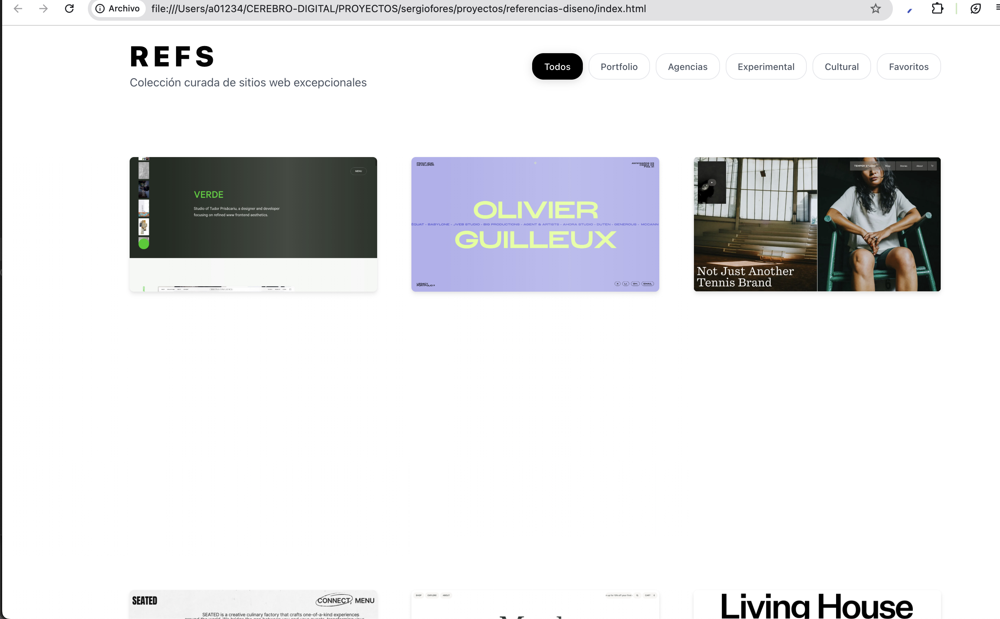

Todo Es Información Viva
Explorador multifacético entre arte plástico, desarrollo con IA e investigación de sistemas cognitivos transformadores.
Sergio Forés
Explorador multifacético entre arte plástico, desarrollo con IA e investigación de sistemas cognitivos transformadores aplicados a la creatividad.
- Potencial infinito
- Curiosidad
- Esencia
- Claridad
- Propósito
- Análisis
- Diferenciación
- Memoria
- Comunicación
- Conexión
- Síntesis
- Materialización
- Acción
- Mejora
01234
Sistema representacional compartido · Marco cognitivo de 5 niveles para comprender patrones universales de consciencia y transformación


Hago
Arte plástico, desarrollo colaborativo con IA, fotografía contemplativa, e-commerce mediterráneo y experimentos web interactivos de vanguardia digital.
Proceso Cognitivo
Arte generativo IA experimental

dIAlogando con IA
Desarrollo colaborativo con IA

Obra Plástica
Portfolio museístico obra plástica

Exploración Fotográfica
Archivo fotográfico personal contemplativo

Taller Vivencial 01234
Taller inmersivo 3 días

Tienda Peñíscola
E-commerce productos mediterráneos artesanales
Castillo Peñíscola Alquiler
Apartamento turístico castillo histórico

Noelia Requena
Portfolio artista producción profesional

O1234 NNG
Experimento web sistema 01234

Gematria App
Calculadora gematría análisis numerológico

Repositorio 01234 V4
Repositorio digital marco cognitivo

Podcast API
Explorador podcasts API integrada

O1234 Slidev
Presentación interactiva sistema 01234
Bitácora 01234
Blog IA arte filosofía

GitHub Profile
Repositorios código abierto públicos

Design System
Arquitectura de diseño minimalista que aplica los principios cognitivos del sistema 01234.
Referencias de Diseño
Showcase curado diseño excepcional
Sistema Agentes 01234
Arquitectura cognitiva híbrida cinco niveles IA
TOT Boilerplate
Sistema de prototipado de alta definición asistido por IA con foco en el diseño